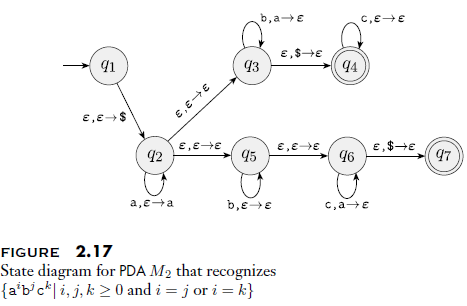
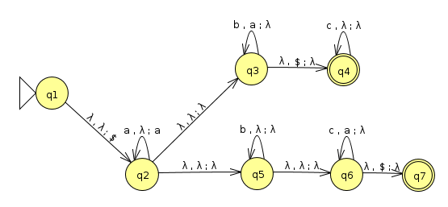
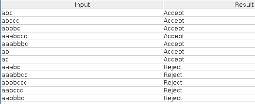
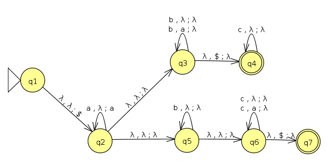
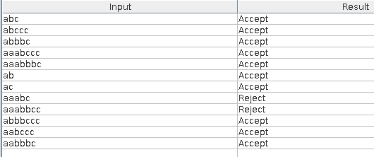

Author: Jon Craton
Date: March 13, 2018
Due Date: Tuesday, Mar 13, 2018 By Midnight
1.29 Use the pumping lemma to show that the following languages are not regular.
a. A₁ = { 0ⁿ1ⁿ2ⁿ|n ≥ 0 }
This will be solved by applying a proof by contradiction and the pumping lemma.
Assume that A is a regular language. Let p be the pumping length from the pumping lemma. Let s be the string 0p1p2p. s is a member of A and |s| ≥ p, so the pumping lemma for regular languages applies.
The pumping lemma for regular languages states that s can be partitioned as xyz such that xyⁱz∈A where i≥0. Additionally, |y| > 0 and |xy| ≤ p. When considering the possible partition schemes for s, we see that only y=0k where k>0 and k≤p satisfies the conditions that |y| > 0 and |xy| ≤ p.
The pumping lemma tells us that xyⁱz∈A for all i≥0. However, for i=0, the zero component is completely removed from our string while 1k2k remains. The generated string is not a member of the language for all k, therefore, A is not a regular language by contradiction.
b. A₂ = { www|w ∈ {a,b}* }
This will be solved by applying a proof by contradiction and the pumping lemma.
Assume that A is a regular language. Let p be the pumping length from the pumping lemma. Let s be the string apapap. s is a member of A and |s| ≥ p, so the pumping lemma for regular languages applies.
The pumping lemma for regular languages states that s can be partitioned as xyz such that xyⁱz∈A where i≥0. Additionally, |y| > 0 and |xy| ≤ p. When considering the possible partition schemes for s, we see that only x=ɛ,y=ak,z=akak where k>0 and k≤p satisfies the conditions that |y| > 0 and |xy| ≤ p.
The pumping lemma tells us that xyⁱz∈A for all i≥0. However, for i=0, the first copy of our language w is completely removed from our string while akak remains. The generated string is not a member of the language for all k (when p=1, the string contains a number of a's that is not a multiple of 3), therefore, A is not a regular language by contradiction.
2.4 Give context-free grammars that generate the following languages. In all parts the alphabet Σ is {0, 1}.
b. {w | w starts and ends with the same symbol}
from nltk import CFG
grammar = CFG.fromstring("""
S -> '0' Any '0'
S -> '1' Any '1'
S -> '0' | '1'
Any -> '0' Any
Any -> '1' Any
Any ->
""")
from nltk.parse.generate import generate
print([''.join(s) for s in generate(grammar, depth=5)])
['00000', '00010', '0000', '00100',
'00110', '0010', '000', '01000',
'01010', '0100', '01100', '01110',
'0110', '010', '00', '10001',
'10011', '1001', '10101', '10111',
'1011', '101', '11001', '11011',
'1101', '11101', '11111', '1111',
'111', '11', '0', '1']
c. {w | the length of w is odd|
grammar = CFG.fromstring("""
S -> OneCount EvenCount
OneCount -> '0' | '1'
EvenCount -> OneCount OneCount
EvenCount ->
""")
print([''.join(s) for s in generate(grammar, depth=5)])
['000', '001', '010', '011',
'0', '100', '101', '110',
'111', '1']
Figure 2.17 shows a push down automata which recognizes {aibjck| i, j, k≥0 and i=j or i=k}. Please design and draw a new push down automata which recognizes {aibjck| i, j, k≥0 and i≥j or i≥k}.

Here's the orignal in JFLAP:

Basically, this needs to be amended to also accept i > j or i > k. Let's make sure the orignal does what we expect first:

Now we need to add a few transitions to allow the machine to be able to loop after it has met the desired conditions:

Now we see that our test for the new mode are passing:

2.14 Convert the following CFG into an equivalent CFG in Chomsky normal form, using the procedure given in Theorem 2.9.
A→BAB|B|ε
B→00|ε
Step 1: Rename start variable
A₀→A
A→BAB|B|ε
B→00|ε
Step 2: Remove ε rules
For B:
A₀→A
A→BAB|B|ε|A
B→00
Then for A:
A₀→A
A→BAB|B|A|BB
B→00
We are allowed an ε rule for the start state, and in this case we need it.
A₀→A|ε
A→BAB|B|A|BB
B→00
Step 3: Remove unit rules
A→A:
A₀→A|ε
A→BAB|B|BB
B→00
A→B:
A₀→A|ε
A→BAB|00|BB
B→00
A₀→A:
A₀→BAB|00|BB|ε
A→BAB|00|BB
B→00
Step 4: Convert rules to proper form
A₀→BB₁|00|BB|ε
A→BB₁|00|BB
B₁→AB
B→00
I'm not sure if "00" counts as a single non-terminal in this case. Just in case it does not, I'll create a separate rule so that "0" is the only non-terminal.
A₀→BB₁|ZZ|BB|ε
A→BB₁|ZZ|BB
B₁→AB
B→ZZ
Z→0
Just to check our work, let's weakly verify that the starting form and CNF generate the same language:
start = CFG.fromstring("""
A -> B A B | B |
B -> '0' '0'|
""")
cnf = CFG.fromstring("""
A0 -> B B1 | Z Z | B B |
A -> B B1 | Z Z | B B
B1 -> A B
B -> Z Z
Z -> '0'
""")
from nltk.parse.chart import ChartParser
def is_equivalent(a, b, flipped=False):
"""
Quick check to see if two grammars are equivalent.
There's likely a proper algorithm for formally verifying that two
grammars are equivelent. This doesn't attempt anything like that.
It simply creates a number of utterances with grammar a and confirms
they can be parsed by grammar b. This function cannot guarantee that
two grammars are equivalent, but if it returns False, the grammars are
definitely different.
"""
parser = ChartParser(a)
for s in generate(b, depth=5):
if len(list(parser.parse(s))) == 0:
print("Unable to parse %s" % s)
return False
return flipped or is_equivalent(b,a,flipped=True)
is_equivalent(start, cnf)
True
2.30 Use the pumping lemma to show that the following languages are not context free.
a. A = { 0ⁿ1ⁿ0ⁿ1ⁿ | n≥0 }
This will be solved by applying a proof by contradiction and the pumping lemma for context-free languages.
Assume that A is a context-free language. Let p be the pumping length from the pumping lemma for context-free languages. Let s be the string 0p1p0p1p. s is a member of A and |s| ≥ p, so the pumping lemma for context-free languages applies.
The pumping lemma for context-free languages states that s can be partitioned as uvxyz such that uvⁱxyⁱz∈A for all i≥0. Additionally, |vy| > 0 and |vxy| ≤ p. When considering the possible partition schemes for s, we see that v or y must be either 0k or 1k as these are the only values that satisfy the conditions |vy| > 0 and |vxy| ≤ p.
The pumping lemma tells us that uvⁱxyⁱz∈A for all i≥0. Pumping either of the possible values for v or y to anything other than i=1 produces a string with an unbalanced number of 1s and 0s. This sting is not a member of the language, therefore, A is not a context-free language by contradiction.
Answer the following two questions:
a. Briefly describe how regular language is used for lexical analysis in a compiler.
Regular language is commonly used in lexical analysis to convert segments of text (lexemes) into tokens. If a segment of text matches a token rule, it is converted to a token. Tokens have a both a name and a value.
For example, take the following text from a c-like langauge:
if ( a == 12 ) { return 42 }
A lexer may contain regular language rules to match against the string such as:
if → IF
return → RETURN
( → OPEN_P
) → CLOSE_P
== → IS_EQUAL
{ → OPEN_B
} → CLOSE_B
\d+ → INT_LITERAL
* → NAME
The lexer then converts the string to a list of (name, value) duples such as:
(IF, 'if')
(OPEN_P, '(')
(NAME, 'a')
(IS_EQUAL, '==')
(INT_LITERAL, '12')
(CLOSE_P, ')')
(OPEN_B, '{')
(RETURN, 'return')
(INT_LITERAL, '42')
(CLOSE_B, '}')
In this way, the lexer uses regular language to convert lexemes matching a particular langage to tokens.
b. Briefly describe how context free language is used for parsing (syntax analysis) in a compiler.
Once tokenized, the syntax of a text can be parsed. The overall syntax of many common programming langauges is context-free, so the syntax is matched to a context-free grammar.
Considering the above example, we may have grammar rules such as the following. Note that terminals here are the token names from above.
STMT → IF_STMT | RETURN_STMT
RETURN_STMT → RETURN EXPR
IF_STMT → IF CONDITION BLOCK
CONDITION → OPEN_P EXPR CLOSE_P
BLOCK → OPEN_B STMT CLOSE_B
EXPR → EXPR OP EXPR | INT_LITERAL
OP → IS_EQUAL
These rules are used to parse the tokens into a parse tree that can be easily interpretted or compiled to machine code.
The completed code for this assignment is in the q1, q2, and q3 directories.
When you use gcc compile a program, e.g., hello.c
gcc hello.c –o hello
It will create a binary file. You can also check the temporary output files created by gcc using option –save-temps. Try
gcc hello.c –o hello –save-temps
and find out what intermediate output files can be produced by gcc. Briefly describe each intermediate output file.
A typical C compilation pipeline is handled in 4 phases:
The pre-processor expands macros and handles includes. In a nutshell, it takes care of anything starting with #. With --save-temps the output of this phase is stored in hello.i. This output is valid C code. After this stage, our hello.c program is still fundamentally the same with a lot of #include inlining:
# 1 "hello.c"
# 1 "<built-in>"
# 1 "<command-line>"
# 1 "/usr/include/stdc-predef.h" 1 3 4
# 1 "<command-line>" 2
... (trimmed ~1900 lines)
void main()
{
printf("hello world\n");
}
The compiler converts pre-processed C code into assembly instructions. It's worth noting that while an intermediate human-readable representation is handy, it isn't strictly necessary. Compilation could output machine code directly, but using intermediate assembly modularizes the tool chain. Also, because C allows inline assembly, you need a full assembler in either case. This intermediate representation also doesn't need to actually be assembly language instructions for the target platform. For example, LLVM uses a platform independent intermediate representation.
The output of this step is stored in hello.s, and is stored as assembly instructions still viewable as text:
.file "hello.c"
.section .rodata
.LC0:
.string "hello world"
.text
.globl main
.type main, @function
main:
.LFB2:
.cfi_startproc
pushq %rbp
.cfi_def_cfa_offset 16
.cfi_offset 6, -16
movq %rsp, %rbp
.cfi_def_cfa_register 6
movl $.LC0, %edi
call puts
nop
popq %rbp
.cfi_def_cfa 7, 8
ret
.cfi_endproc
.LFE2:
.size main, .-main
.ident "GCC: (Ubuntu 5.4.0-6ubuntu1~16.04.9) 5.4.0 20160609"
.section .note.GNU-stack,"",@progbits
The assembler converts assembly instructions to machine code. The output of this stage is stored as hello.o. This stage is notable as this output is frequently generated as part of a "normal" build process. Typically, many C files are assembled and then linked into a single final executable.
Being machine code, we can't easily view .o files directly. GCC does include a tool called objdump to allow us to disassemble obejct files. Here's the output of objdump -D hello.o to demonstrate that the object file basically contains our previous assembly code as machine code:
hello.o: file format elf64-x86-64
Disassembly of section .text:
0000000000000000 <main>:
0: 55 push %rbp
1: 48 89 e5 mov %rsp,%rbp
4: bf 00 00 00 00 mov $0x0,%edi
9: e8 00 00 00 00 callq e <main+0xe>
e: 90 nop
f: 5d pop %rbp
10: c3 retq
Disassembly of section .rodata:
0000000000000000 <.rodata>:
0: 68 65 6c 6c 6f pushq $0x6f6c6c65
5: 20 77 6f and %dh,0x6f(%rdi)
8: 72 6c jb 76 <main+0x76>
a: 64 fs
...
Disassembly of section .comment:
0000000000000000 <.comment>:
0: 00 47 43 add %al,0x43(%rdi)
3: 43 3a 20 rex.XB cmp (%r8),%spl
6: 28 55 62 sub %dl,0x62(%rbp)
9: 75 6e jne 79 <main+0x79>
b: 74 75 je 82 <main+0x82>
d: 20 35 2e 34 2e 30 and %dh,0x302e342e(%rip) # 302e3441 <main+0x302e3441>
13: 2d 36 75 62 75 sub $0x75627536,%eax
18: 6e outsb %ds:(%rsi),(%dx)
19: 74 75 je 90 <main+0x90>
1b: 31 7e 31 xor %edi,0x31(%rsi)
1e: 36 2e 30 34 2e ss xor %dh,%cs:(%rsi,%rbp,1)
23: 39 29 cmp %ebp,(%rcx)
25: 20 35 2e 34 2e 30 and %dh,0x302e342e(%rip) # 302e3459 <main+0x302e3459>
2b: 20 32 and %dh,(%rdx)
2d: 30 31 xor %dh,(%rcx)
2f: 36 30 36 xor %dh,%ss:(%rsi)
32: 30 39 xor %bh,(%rcx)
...
Disassembly of section .eh_frame:
0000000000000000 <.eh_frame>:
0: 14 00 adc $0x0,%al
2: 00 00 add %al,(%rax)
4: 00 00 add %al,(%rax)
6: 00 00 add %al,(%rax)
8: 01 7a 52 add %edi,0x52(%rdx)
b: 00 01 add %al,(%rcx)
d: 78 10 js 1f <.eh_frame+0x1f>
f: 01 1b add %ebx,(%rbx)
11: 0c 07 or $0x7,%al
13: 08 90 01 00 00 1c or %dl,0x1c000001(%rax)
19: 00 00 add %al,(%rax)
1b: 00 1c 00 add %bl,(%rax,%rax,1)
1e: 00 00 add %al,(%rax)
20: 00 00 add %al,(%rax)
22: 00 00 add %al,(%rax)
24: 11 00 adc %eax,(%rax)
26: 00 00 add %al,(%rax)
28: 00 41 0e add %al,0xe(%rcx)
2b: 10 86 02 43 0d 06 adc %al,0x60d4302(%rsi)
31: 4c 0c 07 rex.WR or $0x7,%al
34: 08 00 or %al,(%rax)
...
The linker merges object file(s) into a single final executable. It adds necessary bootstraping code to start execution, handles environment variables, and grabs command line arguments among other tasks.
It converts references to external code to the correct locations. The linker may run dynamically to call into dynamically loaded dependencies, or it can be run statically to include all dependencies directly in the final binary.
The output of this stage is the final executable, hello. This stage is also hard to view directly, but we can still use objdump to convert it to assembly for debugging:
q1/hello: file format elf64-x86-64
Disassembly of section .init:
00000000004003c8 <_init>:
4003c8: 48 83 ec 08 sub $0x8,%rsp
4003cc: 48 8b 05 25 0c 20 00 mov 0x200c25(%rip),%rax # 600ff8 <_DYNAMIC+0x1d0>
4003d3: 48 85 c0 test %rax,%rax
4003d6: 74 05 je 4003dd <_init+0x15>
4003d8: e8 43 00 00 00 callq 400420 <__libc_start_main@plt+0x10>
4003dd: 48 83 c4 08 add $0x8,%rsp
4003e1: c3 retq
Disassembly of section .plt:
00000000004003f0 <puts@plt-0x10>:
4003f0: ff 35 12 0c 20 00 pushq 0x200c12(%rip) # 601008 <_GLOBAL_OFFSET_TABLE_+0x8>
4003f6: ff 25 14 0c 20 00 jmpq *0x200c14(%rip) # 601010 <_GLOBAL_OFFSET_TABLE_+0x10>
4003fc: 0f 1f 40 00 nopl 0x0(%rax)
0000000000400400 <puts@plt>:
400400: ff 25 12 0c 20 00 jmpq *0x200c12(%rip) # 601018 <_GLOBAL_OFFSET_TABLE_+0x18>
400406: 68 00 00 00 00 pushq $0x0
40040b: e9 e0 ff ff ff jmpq 4003f0 <_init+0x28>
0000000000400410 <__libc_start_main@plt>:
400410: ff 25 0a 0c 20 00 jmpq *0x200c0a(%rip) # 601020 <_GLOBAL_OFFSET_TABLE_+0x20>
400416: 68 01 00 00 00 pushq $0x1
40041b: e9 d0 ff ff ff jmpq 4003f0 <_init+0x28>
Disassembly of section .plt.got:
0000000000400420 <.plt.got>:
400420: ff 25 d2 0b 20 00 jmpq *0x200bd2(%rip) # 600ff8 <_DYNAMIC+0x1d0>
400426: 66 90 xchg %ax,%ax
Disassembly of section .text:
0000000000400430 <_start>:
400430: 31 ed xor %ebp,%ebp
400432: 49 89 d1 mov %rdx,%r9
400435: 5e pop %rsi
400436: 48 89 e2 mov %rsp,%rdx
400439: 48 83 e4 f0 and $0xfffffffffffffff0,%rsp
40043d: 50 push %rax
40043e: 54 push %rsp
40043f: 49 c7 c0 b0 05 40 00 mov $0x4005b0,%r8
400446: 48 c7 c1 40 05 40 00 mov $0x400540,%rcx
40044d: 48 c7 c7 26 05 40 00 mov $0x400526,%rdi
400454: e8 b7 ff ff ff callq 400410 <__libc_start_main@plt>
400459: f4 hlt
40045a: 66 0f 1f 44 00 00 nopw 0x0(%rax,%rax,1)
... (snipped)
The flex file, calc.lex, is a simple calculator. You can compile the file with the following commands:
flex calc.lex; gcc -o calc lex.yy.c
You can then run the calculator with the calc command and can quit out
of it using ctrl-d.
Do the following and submitted your modified code:
We need to add rules to the lexer for these operations. Here's the patch to implement this:
diff --git a/q2/calc.lex b/q2/calc.lex
index 101c022..01e6612 100644
--- a/q2/calc.lex
+++ b/q2/calc.lex
@@ -32,7 +32,9 @@ struct tokenInfo2 yylval;
:= printf("ASSIGNMENT\n");
\+ printf("PLUS\n");
+\- printf("MINUS\n");
\* printf("MULTIPLY\n");
+\/ printf("DIVIDE\n");
\n printf("NEWLINE\n");
Make sure that you set the lineNumber variable in yylval.ti for each token and print out the line count when you print out variable information.
We need to update the block that handles newlines to increment a counter, and update the variable display to also show this counter. Here's the patch to implement this:
diff --git a/q2/calc.lex b/q2/calc.lex
index 01e6612..b91c8a0 100644
--- a/q2/calc.lex
+++ b/q2/calc.lex
@@ -21,7 +21,7 @@ struct tokenInfo2 yylval;
[a-z] {
yylval.ti.value = 0;
yylval.ti.name = (char *) strdup(yytext);
- printf("VARIABLE: %s\n", yylval.ti.name);
+ printf("VARIABLE: %s LINES: %d\n", yylval.ti.name, yylval.ti.lineNumber);
}
[0-9]+ {
@@ -36,7 +36,10 @@ struct tokenInfo2 yylval;
\* printf("MULTIPLY\n");
\/ printf("DIVIDE\n");
-\n printf("NEWLINE\n");
+\n {
+ printf("NEWLINE\n");
+ yylval.ti.lineNumber += 1;
+ }
[ \t] ;
The variables must start with an alphabetic character or '_' character and may be followed by 0 or more alphabetic/numerical/'_'/'-' characters.
We just need to extend the regex to meet these requirements. Here's the patch to implement this:
diff --git a/q2/calc.lex b/q2/calc.lex
index b91c8a0..9857abd 100644
--- a/q2/calc.lex
+++ b/q2/calc.lex
@@ -18,7 +18,7 @@ struct tokenInfo2 yylval;
%%
-[a-z] {
+[a-zA-Z_][a-zA-Z0-9_\-]* {
yylval.ti.value = 0;
yylval.ti.name = (char *) strdup(yytext);
printf("VARIABLE: %s LINES: %d\n", yylval.ti.name, yylval.ti.lineNumber);
A flex file, calc.lex, a bison file, calc.y, and a Makefile are provide in homework2 q3 folder. You can compile the flex file and the bison file by running
make
A binary execution file, calc, will be created.
You can then run the calculator with the qcalc command and can quit out
of it using quit.
Do the following and submitted your modified code:
Let x, y are two numbers, \({x\hat{}y = x}^{y}\).
We need to add a rule to the lexer for power and a rule to the parser to actually do the math. We also need explicitly link against libm using the -lm gcc flag since we are calling the pow function that lives there.
Here's the patch to implement this:
diff --git a/q3/Makefile b/q3/Makefile
index d002bb4..3f2fd68 100644
--- a/q3/Makefile
+++ b/q3/Makefile
@@ -7,7 +7,7 @@ lex.yy.c: calc.lex calc.tab.h
flex calc.lex
calc: lex.yy.c calc.tab.c calc.tab.h
- gcc -o calc calc.tab.c lex.yy.c -lfl
+ gcc -o calc calc.tab.c lex.yy.c -lfl -lm
test: calc
echo "1+1" | ./calc | grep 2
diff --git a/q3/calc.lex b/q3/calc.lex
index 975e718..5153c79 100644
--- a/q3/calc.lex
+++ b/q3/calc.lex
@@ -16,6 +16,7 @@
"-" {return '-';}
"*" {return '*';}
"/" {return '/';}
+"^" {return '^';}
"quit" {return QUIT;}
%%
diff --git a/q3/calc.y b/q3/calc.y
index 29a338d..a2451de 100644
--- a/q3/calc.y
+++ b/q3/calc.y
@@ -20,6 +20,7 @@ void yyerror(const char* s);
%token QUIT
%left '+' '-'
%left '*' '/'
+%left '^'
%type<ival> exp
@@ -41,6 +42,7 @@ exp: NUM { $$ = $1; }
| exp '-' exp { $$ = $1 - $3; }
| exp '*' exp { $$ = $1 * $3; }
| exp '/' exp { $$ = $1 / $3; }
+ | exp '^' exp { $$ = pow($1, $3); }
;
%%
An expression inside parentheses needs to be evaluated first, e.g., enter 2 * ( 3 + 2) in the calculator and it should return 10.
We need to add parens to the lexer, and properly handle them in the parser at the highest priority. Here's the patch to implement this:
diff --git a/q3/calc.lex b/q3/calc.lex
index 5153c79..c20788f 100644
--- a/q3/calc.lex
+++ b/q3/calc.lex
@@ -17,6 +17,8 @@
"*" {return '*';}
"/" {return '/';}
"^" {return '^';}
+"(" {return '(';}
+")" {return ')';}
"quit" {return QUIT;}
%%
diff --git a/q3/calc.y b/q3/calc.y
index a2451de..3e84c55 100644
--- a/q3/calc.y
+++ b/q3/calc.y
@@ -18,6 +18,7 @@ void yyerror(const char* s);
%token<ival> NUM
%token QUIT
+%left '(' ')'
%left '+' '-'
%left '*' '/'
%left '^'
@@ -38,6 +39,7 @@ line: '\n'
;
exp: NUM { $$ = $1; }
+ | '(' exp ')' { $$ = $2; }
| exp '+' exp { $$ = $1 + $3; }
| exp '-' exp { $$ = $1 - $3; }
| exp '*' exp { $$ = $1 * $3; }
I added a short test task to the makefile to validate that the final program does what it is supposed to do. This can be run in the q3 directory as make test:
> make test
echo "1+1" | ./calc | grep 2
Result: 2
echo "8/4" | ./calc | grep 2
Result: 2
echo "7-2*3" | ./calc | grep 1
Result: 1
echo "2^4" | ./calc | grep 16
Result: 16
echo "(1+1)^4" | ./calc | grep 16
Result: 16
echo "2*(3+2)" | ./calc | grep 10
Result: 10